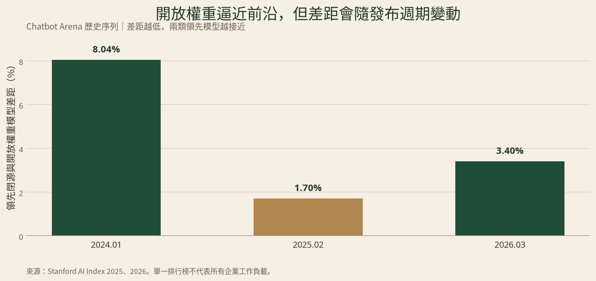
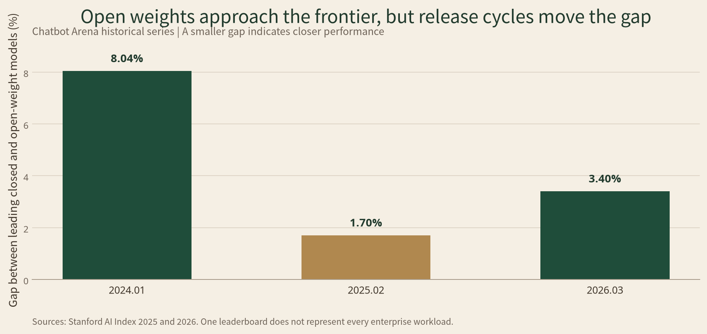

核心判斷
開源 AI 與閉源巨頭的競爭，不會以其中一方完全消滅另一方結束。更可能出現的結果是：開放權重模型把通用模型能力逐步商品化；閉源巨頭則把商業價值轉移到算力、雲端分發、企業工作流、專有資料整合和持續安全控制。
這場博弈也不是單純的技術競賽。它同時決定企業是否被單一供應商鎖定，監管是否提高市場進入門檻，以及國家能否在自己的法律、語言和資料邊界內運行 AI。
開放權重降低了取得模型的門檻，卻沒有消除算力和部署門檻；閉源服務保留了能力和控制優勢，卻必須面對價格下降與供應商鎖定的反作用力。
一、先校正詞彙：可下載不等於真正開源
市場經常把可以下載權重的模型稱為「開源 AI」，但這個說法不夠準確。
Open Source Initiative 的《Open Source AI Definition 1.0》要求一個開源 AI 系統同時滿足兩類條件。使用者首先要擁有為任何目的使用、研究、修改和分享系統的自由。開發者亦要提供可修改的必要材料，包括資料資訊、完整訓練與執行程式碼，以及模型參數或權重。1
開放權重（open-weight）只代表訓練後的參數可以取得。使用者通常可以本地部署、量化或微調模型，但未必能取得完整訓練資料、資料處理流程和端到端訓練程式，也可能受到用途、規模或再分發限制。美國國家電信暨資訊管理局也把可廣泛下載的權重與模型架構、訓練程序和資料明確分開。2
例如，Meta 的 Llama 3.1 可以下載和修改，但其社群授權包含歸屬、命名和使用政策；月活躍使用者超過7億的企業還需要另行申請授權。3 因此，它更適合被稱為開放權重模型，而不是不附條件的開源 AI。
這個區別直接影響商業判斷。可下載回答的是能否取得模型；可商用回答的是授權是否容許某類商業活動；真正開源則要求更廣泛的權利和完整工件。三者不能互相代替。
| 發布模式 | 使用者實際取得 | 主要優勢 | 主要限制 |
|---|---|---|---|
| 真正開源 AI | 權重、必要程式、資料資訊及廣泛修改與分享權 | 可審計、可重建、可自由形成衍生生態 | 前沿模型極少完整達到這一標準 |
| 開放權重 | 可下載參數，通常可本地部署和微調 | 資料控制、客製化及供應商替換 | 訓練流程可能不透明，授權可能有限制 |
| 閉源服務 | API或產品介面，不交付模型資產 | 快速部署、前沿能力、持續更新及安全控制 | 按量收費、可見性有限、存在平台鎖定 |
二、開放權重正在壓低模型本身的稀缺性
閉源公司的第一層護城河是模型能力。但當相近能力透過開放權重快速擴散，這道護城河的維持時間就會縮短。
Stanford AI Index 2025 顯示，在 Chatbot Arena 的人類偏好排名中，領先閉源模型與領先開放權重模型的差距，由2024年1月的8.04%縮小至2025年2月的1.70%。6 這證明開放權重模型曾迅速逼近前沿。
但「全面追平」同樣是過度推論。Stanford AI Index 2026 的同一序列顯示，到2026年3月，領先閉源模型得分為1,503，領先開放權重模型為1,454，差距重新擴大至約3.4%。7
這組數據反映的不是固定排名，而是發布週期。閉源實驗室推出新一代模型後，差距可能擴大；開放生態透過蒸餾、微調、效率改進和新模型發布追上後，差距又會縮小。
| 時點 | 領先閉源與開放權重模型的差距 | 解讀 |
|---|---|---|
| 2024年1月 | 8.04% | 閉源前沿優勢明顯 |
| 2025年2月 | 1.70% | 開放權重快速逼近 |
| 2026年3月 | 約3.4% | 新一輪閉源發布再次拉開差距 |
單一排行榜不能代表所有企業任務。程式開發、代理工作流、長上下文、亞洲語言、科學推理、延遲和安全表現都可能得出不同結果。真正重要的變化是：大量「足夠好」的工作負載已不再需要最昂貴的閉源前沿模型。
這會把競爭由「誰擁有模型」推向「誰能以最低成本把模型變成可靠產品」。

三、閉源巨頭正在把護城河移到模型之外
當模型能力變得較容易替代，閉源巨頭不會只靠每百萬 token 的價格維持優勢。它們會把模型嵌入更難替換的系統。
第一層是算力和容量。訓練前沿模型需要晶片、電力、資料中心和分散式工程；服務大量企業客戶還需要穩定的推理容量。即使模型權重可以免費下載，部署大型模型仍可能需要多張 GPU、專業維運和安全基礎設施。
第二層是分發。Microsoft 可以把模型能力放入 Azure、Microsoft 365和GitHub；Google可以結合Cloud、Workspace和Android；Amazon則可透過AWS、Bedrock和企業雲端關係分發多種模型。客戶購買的不只是模型，而是一套已經連接身份權限、資料庫、監控、合規和採購流程的服務。
第三層是工作流鎖定。企業最深的轉換成本通常不在API呼叫本身，而在檢索增強生成（RAG）資料管線、提示詞、工具介面、離線評測、安全規則、審計紀錄和員工培訓。更換模型可以很快，重建整套流程卻不容易。
OECD指出，AI市場的算力、資料、人才和雲端供應仍高度集中。雲端業務具有資本密集、規模經濟和切換成本。8 同一研究亦顯示，2024年1月至2026年4月，語言模型開發者由9家增加至47家，活躍文字模型由22個增加至453個。8
這兩個趨勢可以同時成立：模型供應增加，但關鍵基礎設施仍然集中。
四、成本優勢取決於負載，而不是陣營
開放權重支持者經常引用 DeepSeek-V3 約557.6萬美元的訓練數字，證明前沿能力不一定需要巨額投入。但技術報告明確表示，這只是按H800 GPU小時計算的正式訓練成本，不包括之前的架構研究、演算法實驗、資料工作及失敗嘗試。4
Epoch AI 對前沿模型成本的研究顯示，若計入完整開發，人員可以佔29%至49%，硬體約佔47%至67%，能源約佔2%至6%。雲端租用與硬體折舊的估算口徑也會產生明顯不同的結果。5
推理價格則正在快速下降。Stanford AI Index 2025顯示，達到GPT-3.5級MMLU表現的API價格，由2022年11月每百萬token 20美元降至2024年10月0.07美元，下降超過280倍。6
這對雙方都造成壓力。
閉源供應商必須透過更強模型、企業保障、工具和工作流提高每名客戶的價值。開放權重供應商則不能只以「免費權重」建立商業模式，而要透過託管推理、私有部署、微調、連接器、服務水準協議和專業服務收費。
對企業來說，正確問題不是「開放是否比閉源便宜」，而是：
- 流量是否穩定，足以提高自有GPU利用率？
- 敏感資料是否必須留在內部環境？
- 團隊是否具備模型運維、安全和評測能力？
- 任務是否真的需要最前沿能力？
- API費用以外，工程人力、閒置容量和風險成本是多少？
低流量、需求波動大的團隊通常更適合API；高流量、任務穩定且具備平台能力的企業，才較可能從自管開放權重取得總持有成本優勢。
五、安全爭論其實是控制權與不可逆性的博弈
開放權重並非天然安全，也並非天然危險。它改變的是模型發布後的控制條件。
權重公開後，外部研究者可以更深入測試偏差、漏洞和安全機制。企業也可以在不把資料交給外部供應商的情況下運行模型。這有利於透明度、本地隱私和獨立研究。2
另一方面，模型一旦被大量下載，原開發者便難以收回副本、遠端修補安全機制或監察使用方式。閉源API可以封鎖帳戶、更新模型、監察異常流量和限制高風險功能；這些控制在離線權重環境中大幅減弱。
RAND在2026年的研究發現，移除前沿開放權重模型的安全訓練高度可行；在其特定生物安全評估中，移除安全限制後的模型對至少一條現實威脅途徑提供了有限幫助。11 這項研究不能證明所有開放模型都會造成同等風險，但它說明高能力權重的公開具有不可逆性。
因此，合理監管不應只看「開放」或「閉源」標籤，而要看模型的能力、威脅途徑、發布範圍和緩解措施。
歐盟《人工智能法》採取的正是混合模式。一般用途AI模型若符合自由與開放原始碼條件，可以獲得部分文件義務例外；但著作權政策和訓練內容摘要仍然需要提供。具有系統性風險的模型即使公開權重，也仍需承擔模型評估、風險緩解、重大事件報告和網絡安全義務。10
NIST的生成式AI風險管理框架也強調，不論發布模式，開發者和部署者都需要文件化上游依賴、進行部署前及持續評測、紅隊測試和事件管理。9
安全規則可能保護公共利益，也可能成為大型公司的監管護城河。若合規成本只有大型實驗室和雲端公司能承擔，市場會進一步集中。因此，監管需要同時保留獨立研究、外部評測和較小企業的合規路徑。
六、國家競爭把開放權重變成影響力工具
對美國公司而言，開放權重可以阻止市場完全落入另一家閉源平台。Meta免費擴散Llama，不需要直接靠模型API獲利，也能擴大自身技術生態、影響開發標準並降低對競爭者模型的依賴。3
對中國而言，DeepSeek和Qwen等可商用模型降低了全球開發者採用中國技術的摩擦。模型可被蒸餾、本地部署和再開發，意味競爭不再只看原始模型的國籍，還要看其格式、工具和衍生生態是否成為全球標準。
對發展中經濟體而言，開放權重提供了本地語言和主權部署的起點。新加坡的SEA-LION便以東南亞語言和區域文化為定位，並由國家計畫支持。13 但它仍可能依賴Llama或Gemma等上游模型及其授權。
UNCTAD指出，除少數大型發展中經濟體外，多數國家仍缺乏強大超級電腦或大型資料中心。12 因此，下載權重不等於取得主權。
真正的主權AI，不是模型是否可以下載，而是一個國家能否在自己的法律和資料邊界內運行、評估、維護、替換並保護模型。
這還需要電力、晶片、資料治理、本地語言評測、人才、維護社群和多供應商替代能力。
七、誰會受益，誰會承受壓力
| 參與者 | 可能受益的原因 | 主要壓力 |
|---|---|---|
| 大型雲端平台 | 無論模型開放或閉源，都可以出售算力、託管、治理和工作流 | 資本開支高，模型價格下降可能壓縮部分收入 |
| 閉源前沿實驗室 | 擁有最強能力、企業信任及持續控制 | 開放權重逼近時，純API價格和差異化受壓 |
| 開放權重供應商 | 透過生態、私有部署、託管服務和在地化擴張 | 權重免費使直接變現困難，仍需巨大算力 |
| 企業買方 | 模型選擇增加，議價能力和資料控制改善 | 混合架構增加評測、治理與運維複雜度 |
| 中小開發者 | 可使用高能力模型建立垂直產品 | 雲端、分發、資料和合規仍被大型平台控制 |
| 發展中經濟體 | 可從本地語言、公共服務和產業模型切入 | 晶片、能源、人才和上游授權依賴仍然存在 |
最大的受益者未必是發布最多權重的公司，而是控制算力、企業分發和部署工具的企業。開放權重擴大模型供應，反而可能增加對GPU、雲端推理、模型託管和安全服務的需求。
最大的壓力則落在只依靠單一模型性能溢價、缺乏分發渠道和企業整合能力的中型模型公司。當前沿能力被快速追趕，它們既沒有大型雲端的成本優勢，也沒有開放社群的採用優勢。
八、三種未來路徑
| 情境 | 主要發展 | 可能勝出者 | 主要風險 |
|---|---|---|---|
| 模型商品化，混合路由成為常態 | 敏感或高量任務轉向私有開放權重，複雜前沿任務使用多家閉源API | 模型路由、私有部署、評測和治理平台 | 模型選擇增加，但鎖定轉移到雲端控制層和資料管線 |
| 高風險前沿能力受控集中 | 高能力模型採分階段發布、受控研究存取或API交付 | 大型實驗室、雲端商及獨立安全評測機構 | 「安全」可能變成排除競爭的理由 |
| 主權AI與地緣政治碎片化 | 各國投資本地語言、共享算力和替代模型生態 | 有能力建設完整算力與治理堆疊的國家和區域 | 標準分裂、成本上升，高風險權重跨境擴散 |
最可能的基準情境是第一種與第三種同時發生。企業會採用混合模型路由；國家則要求關鍵資料和部分模型可以在本地運行。最前沿、高風險能力仍較可能集中在受控服務中。
九、最終判斷
開放權重不會消滅閉源巨頭，但會迫使它們重新定義護城河。 當通用模型能力變得便宜和可替代，真正持久的優勢將由以下能力組成：
- 取得並有效使用算力的能力；
- 把模型嵌入企業工作流和分發渠道的能力；
- 在客戶資料不被濫用的前提下完成整合與評測的能力；
- 持續提供安全控制、可靠性和合規證據的能力；
- 讓客戶保留模型、資料和部署選擇權的能力。
因此，未來的勝負不是「開源對閉源」的單選題。閉源服務會繼續控制部分前沿能力和企業級可靠性；開放權重會成為供應商制衡、本地化和主權部署的重要工具。
模型層會更開放，基礎設施可能更集中；選擇看似增加，真正的控制權則轉移到算力、工作流、資料治理和安全標準。這才是開源AI與閉源巨頭博弈的核心。
References
- Open Source Initiative：《Open Source AI Definition 1.0》——區分真正開源AI與僅開放權重的定義基準。
- 美國NTIA：《Dual-Use Foundation Models with Widely Available Model Weights》——開放權重的競爭、安全、隱私及政策取捨。
- Meta：Llama 3.1 Community License——Llama的使用、再分發及大型企業授權條件。
- DeepSeek-V3 Technical Report——正式訓練GPU成本、模型規模及成本口徑限制。
- Epoch AI：前沿模型訓練成本研究——硬體、人員、能源及完整開發成本拆分。
- Stanford AI Index 2025——2024至2025年開放／閉源Arena差距及推理價格下降數據。
- Stanford AI Index 2026——2026年Arena差距及前沿模型競爭更新。
- OECD：《Artificial Intelligence Markets》——AI市場集中、雲端切換成本與模型供應增長。
- NIST AI 600-1——生成式AI的文件化、評測、紅隊及持續治理基準。
- 歐盟《人工智能法》——一般用途模型、開放原始碼例外及系統性風險義務。
- RAND：開放權重模型與生物濫用風險——移除安全訓練及特定威脅途徑的實驗證據。
- UNCTAD：《Technology and Innovation Report 2025》——發展中經濟體的算力、資料中心與創新能力限制。
- 新加坡IMDA：國家多模態LLM計畫與SEA-LION——東南亞本地語言模型與主權AI案例。
The bottom line
The contest between open AI and closed giants is unlikely to end with one side eliminating the other. A more plausible outcome is that open-weight models gradually commoditize general-purpose model capability, while closed companies move value toward compute, cloud distribution, enterprise workflows, proprietary data integration and continuous safety controls.
This is not merely a technical race. It will shape whether companies remain locked to a single supplier, whether regulation raises barriers to entry and whether countries can operate AI within their own legal, linguistic and data boundaries.
Open weights lower the barrier to obtaining a model, but not the barriers to compute and deployment. Closed services retain advantages in capability and control, but face relentless price pressure and resistance to supplier lock-in.
1. A downloadable model is not necessarily open source
The market often calls any model with downloadable weights “open-source AI.” That is too imprecise for commercial or policy analysis.
The Open Source Initiative’s Open Source AI Definition 1.0 applies two tests. Users must have the freedom to use, study, modify and share a system for any purpose. Developers must also provide the materials needed to make modifications, including data information, complete training and inference code, and model parameters or weights.1
An open-weight model provides access to trained parameters. A user can often deploy, quantize or fine-tune it locally, but may not receive the complete training data, data-processing pipeline or end-to-end training code. The licence may also restrict uses, scale or redistribution. The U.S. National Telecommunications and Information Administration similarly distinguishes widely available weights from model architecture, training procedures and data.2
Meta’s Llama 3.1, for example, can be downloaded and modified. Its community licence nevertheless includes attribution, naming and acceptable-use conditions. Companies with more than 700 million monthly active users must seek a separate licence.3 It is therefore more accurate to describe Llama as open-weight than unconditionally open source.
The distinction has practical consequences. Downloadable describes access. Commercially usable describes permission for particular business activities. Open source requires broader freedoms and a more complete set of artefacts. The terms are not interchangeable.
| Release model | What users obtain | Main advantage | Main limitation |
|---|---|---|---|
| Open-source AI | Weights, essential code, data information and broad rights to modify and share | Auditability, reproducibility and a freely extensible ecosystem | Very few frontier systems fully meet this standard |
| Open-weight AI | Downloadable parameters, usually with local deployment and fine-tuning rights | Data control, customization and supplier choice | Training may remain opaque and licences may restrict use |
| Closed service | API or product access without delivery of model assets | Fast deployment, frontier capability, updates and safety controls | Usage fees, limited visibility and platform dependence |
2. Open weights are reducing the scarcity value of models
The first moat around a closed company is model capability. When similar capability spreads quickly through open weights, the useful life of that moat shrinks.
The Stanford AI Index 2025 found that the gap between the leading closed and open-weight models on Chatbot Arena narrowed from 8.04% in January 2024 to 1.70% in February 2025.6 Open-weight systems had moved much closer to the frontier.
It would still be wrong to declare permanent parity. The Stanford AI Index 2026 reported that, by March 2026, the leading closed model scored 1,503 on the same historical series, compared with 1,454 for the leading open-weight model. The gap had widened again to about 3.4%.7
The pattern reflects release cycles, not a permanent ranking. A new generation from a closed laboratory can widen the lead. Distillation, fine-tuning, efficiency gains and new releases from the open ecosystem can then narrow it.
| Date | Gap between leading closed and open-weight models | Interpretation |
|---|---|---|
| January 2024 | 8.04% | A clear closed-frontier advantage |
| February 2025 | 1.70% | Open weights rapidly approached the frontier |
| March 2026 | About 3.4% | A new closed release widened the gap again |
No single leaderboard represents every enterprise workload. Coding, agentic tasks, long context, Asian languages, scientific reasoning, latency and safety can produce different rankings. The commercially important shift is that many “good enough” tasks no longer require the most expensive closed frontier model.
Competition therefore moves from who owns a model to who can turn it into a reliable product at the lowest total cost.

3. Closed giants are moving their moats beyond the model
As model capability becomes easier to substitute, closed suppliers cannot rely on per-token pricing alone. They are embedding models inside systems that are harder to replace.
The first layer is compute and capacity. Training a frontier system requires chips, power, data centers and distributed engineering. Serving enterprises at scale requires dependable inference capacity. A free set of weights can still require multiple GPUs, specialist operations and security infrastructure.
The second layer is distribution. Microsoft can place AI inside Azure, Microsoft 365 and GitHub. Google can combine Cloud, Workspace and Android. Amazon can distribute multiple models through AWS, Bedrock and existing enterprise relationships. Customers are buying more than a model. They are buying a service already connected to identity, databases, monitoring, compliance and procurement.
The third layer is workflow lock-in. The deepest switching costs often sit outside the API call: retrieval-augmented-generation pipelines, prompts, tool interfaces, offline evaluations, security rules, audit records and employee training. Replacing a model can be quick; rebuilding the operating system around it is not.
The OECD finds that compute, data, talent and cloud supply remain highly concentrated. Cloud markets are capital intensive and benefit from economies of scale, scope and switching costs.8 The same report says the number of language-model developers increased from nine in January 2024 to 47 in April 2026, while active text-to-text models rose from 22 to 453.8
Both trends can be true: model supply is expanding while critical infrastructure remains concentrated.
4. Cost depends on the workload, not the camp
Supporters of open weights often cite the estimated $5.576 million training cost for DeepSeek-V3 as proof that frontier capability need not require enormous spending. The technical report explicitly says this figure covers the official training run calculated from H800 GPU hours. It excludes earlier architecture research, algorithm experiments, data work and failed trials.4
Epoch AI’s research on frontier-model costs shows that personnel can account for 29% to 49% of full development costs, hardware for roughly 47% to 67%, and energy for about 2% to 6%. Estimates also vary materially depending on whether analysts use cloud-rental prices or hardware depreciation.5
Inference prices are falling rapidly. The Stanford AI Index 2025 found that the API cost of reaching GPT-3.5-level MMLU performance fell from $20 per million tokens in November 2022 to $0.07 in October 2024—a decline of more than 280 times.6
That puts pressure on both sides.
Closed suppliers must use stronger models, enterprise guarantees, tools and workflows to raise the value of each customer relationship. Open-weight companies cannot build a business around “free weights” alone. They need revenue from hosted inference, private deployment, fine-tuning, connectors, service-level agreements and professional services.
For enterprises, the relevant question is not whether open is inherently cheaper. It is whether traffic is stable enough to keep owned GPUs busy; whether sensitive data must remain inside a controlled environment; whether the team can operate, secure and evaluate models; whether the task needs frontier capability; and how engineering, idle capacity and risk change the total cost.
APIs often make sense for low or volatile demand. Self-hosted open weights are more likely to win on total cost when workloads are large and stable and the organization already has platform expertise.
5. The safety argument is a contest over control and irreversibility
Open weights are neither inherently safe nor inherently dangerous. They change the conditions under which models can be governed after release.
Public weights let outside researchers examine weaknesses and safety mechanisms more deeply. They also let companies run models without sending sensitive data to an external supplier. Those are genuine benefits for transparency, privacy and independent research.2
Once weights have been widely downloaded, however, the original developer can no longer reliably retrieve copies, patch safeguards remotely or observe how the model is used. A closed API can block accounts, update models, monitor anomalous traffic and restrict high-risk capabilities. Those controls weaken substantially in an offline-weight environment.
RAND reported in 2026 that removing safety training from frontier open-weight models was highly feasible. In its specific biological-security evaluation, a model with safeguards removed provided limited assistance along at least one realistic threat pathway.11 The study does not show that every open model creates the same risk. It does demonstrate why the release of a highly capable set of weights can be irreversible.
Regulation should therefore focus on capability, threat pathways, release scope and tested mitigations rather than treating “open” or “closed” as sufficient evidence.
The European Union’s AI Act takes a hybrid approach. A general-purpose model that qualifies as free and open source may receive limited exceptions from some documentation duties. Copyright policies and training-content summaries still apply. A model with systemic risk remains subject to evaluation, risk mitigation, serious-incident reporting and cybersecurity obligations even when weights are public.10
NIST’s generative-AI risk profile similarly calls for documentation of upstream dependencies, pre-deployment and continuous evaluation, red-team testing and incident management across release models.9
Safety rules can protect the public, but they can also become a regulatory moat for incumbents. If only the largest laboratories and cloud companies can afford compliance, concentration will increase. A defensible regime must preserve routes for independent research, outside evaluation and proportionate compliance by smaller developers.
6. National competition is turning open weights into an instrument of influence
For an American company, open weights can prevent the market from consolidating entirely around another firm’s closed platform. Meta does not need to make Llama primarily an API business to benefit from wider adoption. It can expand its technical ecosystem, influence development standards and reduce dependence on rival model providers.3
For China, commercially usable systems such as DeepSeek and Qwen reduce the friction for global developers to adopt Chinese technology. Because models can be distilled, deployed locally and adapted, competition is no longer only about the nationality of the original model. It is also about whose formats, tools and derivative ecosystem become defaults.
For developing economies, open weights create a starting point for local-language systems and sovereign deployment. Singapore’s SEA-LION initiative is explicitly oriented toward Southeast Asian languages and regional context, with support from a national AI program.13 Yet individual versions may still depend on upstream systems such as Llama or Gemma and their licences.
UNCTAD notes that, outside a small number of large developing economies, most countries still lack powerful supercomputers or large data centers.12 Downloading weights is not the same as acquiring sovereignty.
Sovereign AI is not defined by whether a model can be downloaded. It is the ability to operate, evaluate, maintain, replace and secure AI within a country’s own legal and data boundaries.
That requires power, chips, data governance, local-language evaluation, talent, maintenance communities and alternative suppliers.
7. The likely winners and losers
| Participant | Why it may benefit | Main pressure |
|---|---|---|
| Large cloud platforms | They can sell compute, hosting, governance and workflows regardless of model ownership | Heavy capital spending and falling model prices |
| Closed frontier laboratories | Leading capability, enterprise trust and continuous controls | Open-weight convergence compresses API prices and differentiation |
| Open-weight suppliers | Ecosystems, private deployment, hosting and localization create reach | Free weights are hard to monetize directly and still require compute |
| Enterprise buyers | More choice improves bargaining power and data control | Hybrid systems add evaluation, governance and operational complexity |
| Smaller developers | Strong models can support vertical products | Cloud, distribution, data and compliance remain concentrated |
| Developing economies | Local-language, public-service and industry models offer entry points | Chips, power, talent and upstream licences remain constraints |
The largest beneficiary may not be the company releasing the most weights. It may be the company controlling compute, enterprise distribution and deployment tools. More model supply can increase demand for GPUs, cloud inference, model hosting and security services.
The greatest pressure will fall on mid-sized model companies that rely on a temporary performance premium but lack cloud economics, enterprise distribution or a broad open community. When capability is quickly matched, they possess neither the cost advantage of hyperscalers nor the adoption advantage of open ecosystems.
8. Three paths from here
| Scenario | What changes | Likely winners | Main risk |
|---|---|---|---|
| Models commoditize and hybrid routing becomes normal | Sensitive or high-volume tasks move to private open weights; complex frontier tasks use several closed APIs | Model-routing, private-deployment, evaluation and governance platforms | Lock-in moves from models to cloud control planes and data pipelines |
| High-risk frontier capability becomes more controlled | Staged release, controlled research access or APIs dominate at the frontier | Large laboratories, cloud providers and independent safety evaluators | “Safety” becomes a justification for excluding competitors |
| Sovereign AI and geopolitical fragmentation expand | Governments invest in local languages, shared compute and alternative model ecosystems | Countries and regions able to build complete compute and governance stacks | Fragmented standards, higher costs and irreversible cross-border diffusion |
The most plausible baseline combines the first and third scenarios. Companies will route work across several model types, while governments require critical data and some models to operate locally. The highest-risk frontier capabilities are still likely to remain concentrated in controlled services.
9. Final assessment
Open weights will not eliminate the closed giants, but they will force those companies to redefine their moats. As general model capability becomes cheaper and more substitutable, durable advantage will depend on five things: efficient access to compute; enterprise workflow and distribution; responsible integration of customer data; continuous evidence of reliability, security and compliance; and the ability to give customers meaningful choice over models, data and deployment.
The future is not a binary choice between open and closed. Closed services will continue to control some frontier capabilities and enterprise-grade reliability. Open weights will become an important instrument for supplier discipline, localization and sovereign deployment.
The model layer will become more open while infrastructure may become more concentrated. Choice will appear to expand, but effective control will migrate to compute, workflows, data governance and safety standards. That is the central contest between open AI and the closed giants.
References
- Open Source Initiative, Open Source AI Definition 1.0—the definitional basis for distinguishing open-source AI from open weights.
- U.S. NTIA, Dual-Use Foundation Models with Widely Available Model Weights—competition, safety, privacy and policy trade-offs.
- Meta, Llama 3.1 Community License—conditions governing use, redistribution and very large commercial users.
- DeepSeek-V3 Technical Report—official training-compute estimate, model scale and exclusions from the cost figure.
- Epoch AI, How Much Does It Cost to Train Frontier AI Models?—hardware, personnel, energy and full-development cost estimates.
- Stanford AI Index 2025—2024–25 open/closed Arena gap and inference-price decline.
- Stanford AI Index 2026—updated 2026 Arena gap and frontier competition.
- OECD, Artificial Intelligence Markets—market concentration, cloud switching costs and model-supply growth.
- NIST AI 600-1—documentation, evaluation, red-teaming and continuous governance practices.
- European Union Artificial Intelligence Act—general-purpose models, limited open-source exceptions and systemic-risk duties.
- RAND, Open-Weight AI Models May Increase Biological Misuse Risks—evidence on safeguard removal and a specific threat pathway.
- UNCTAD, Technology and Innovation Report 2025—compute, data-center and innovation constraints in developing economies.
- Singapore IMDA, National Multimodal LLM Programme and SEA-LION—a regional-language and sovereign-AI case.